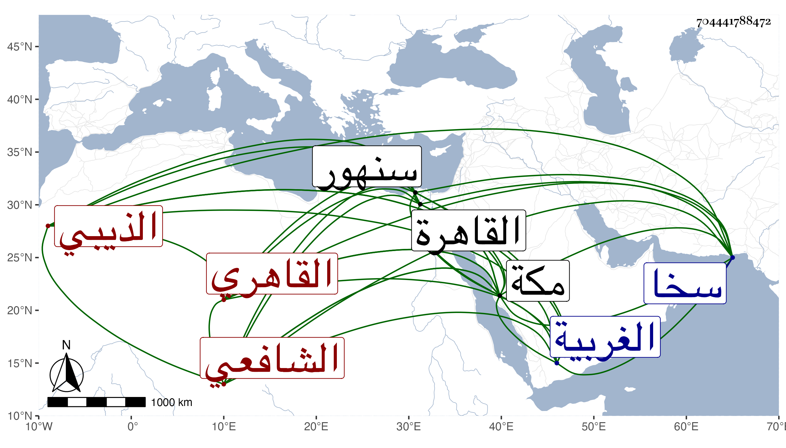

0902Sakhawi.DawLamic.ITO20230111-ara1.EIS1600.704441788472
Biography ID: 704441788472
901
علي بن عمر بن أبي موسى عمران بن موسى بن ناصر الدين محمد بن حمزة بن صالح بن عميرة نور الدين أبو الحسن الذيبي ثم القاهري الشافعي نزيل مكة ويعرف بالذيبي . ولد في خامس عشري شعبان سنة اثنتين وثلاثين وثمانمائة بمنية الذيبة من الغربية بين سخا وسنهور وقدم القاهرة فصحب الشيخ مدين وأخذ عن العبادي كثيرا وأذن له في التدريس والإفتاء في سنة ست وسبعين ثم في سنة ثمانين ووصفه بالعالم الفاضل والسابق المناضل مذكر الأوائل المقدم على الأماثل مقرب الشواسع ومقرر النافع صاحب الأبحاث الفائقة والعبارات الرائقة فائق الأقران نخبة الزمان فاتح مقفلات المشكلات وموضح ما أوهم من المعضلات وذكر غير ذلك من الأوصاف ووالده بالشيخ الإمام القدوة مربي المريدين نخبة الأولياء والصالحين محقق اليقين أبا حفص وجده بالمرتضى العدل الرضي الشرف أبى عمران ، وكذا حضر كثيرا من دروس العلم البلقيني والمناوي وغيرهم كالفخر المقسي والزين زكريا والجوجري والنجم بن حجي والأبناسي وآخرين وحضر عندي في شرح الهداية وغيرها وتولع بالنظم وغلب عليه فن الأدب مع مشاركة في غيره وأظنه ممن يميل مع ابن عربي ويخوض في التوحيد ، وتكسب بالشهادة وكتب بخطه أشياء . وحج غير مرة وجاور مرارا وجلس هناك في باب السلام شاهدا مع المداومة لحضور دروس البرهاني ثم ولده وربما حضر عندي ولكنه كان في غالب مجاورتنا الرابعة ضعيفا بحيث أيس منه ثم عوفى كل ذلك وهو صابر قانع مع تجرع فاقة تامة وتودد تام وفصاحة وعبارة ، وله في البرهان وولده القصائد البديعة سمعت كثيرا منها بل كتب عنه النجم بن فهد بعضها ومما كتبته عنه قوله :
| إن الأولى أذنوا بالمصطفى ذكروا | سبعا فخذ عدها في در منظوم |
| حبان سعد بلال ابن الأصم أبو | محذورة والصدائي ابن أم كلثوم |
وقوله مما جمع فيه العشرة على ترتيبهم :
| عتيق عمر عثمان علي طلحة | زبير سعد سعيد وابن عوف وعامر |
وهو ممن قرظ مجموع البدري فكان مما كتبه :
| هو السيل إلا أن ذاك انسكابه | يحاكي لذا سكبا حلا حين صنفا |
| هو البحر إلا أنه العذب في اللهى | سوى أن فيه الدر يوجد أحرفا |
وقد نقل عني بحاشية آخر مفتاح الفلاح لابن عطاء الله عند مسلسل بالله العظيم من كتابي الجواهر المكللة الحكم على هذا المسلسل فوصف بعلامة الحفاظ والمحدثين محيي سنة سيد الأنبياء والمرسلين السخاوي من لبهجة فنون علوم الحديث أمسى الحاوي أيد الله تعالى به السنة الشريفة وأفاض عليه ومنه وبه المنن المنيفة ورأيته في مجاورتي الخامسة زائد التحري في تجنب الغيبة . وحكى لي أول ما قدم مكة وجد بين الفريقين الظهيريين والنويريين مزيد التشاحن والتباغض فأحب الانفراد عن الفريقين خوفا من الخوض فيما يؤدي لها ثم بعد ثلثي شهر خشي من كونه يؤدي إلى جفاء فخالط وكان البرهانى يعد ذلك من محاسنه ومع ذلك فلم يسلم ممن أنكر قوله في بعض قصائده التي امتدح بها الجمالي فما النووي فما ابن الصلاح .
